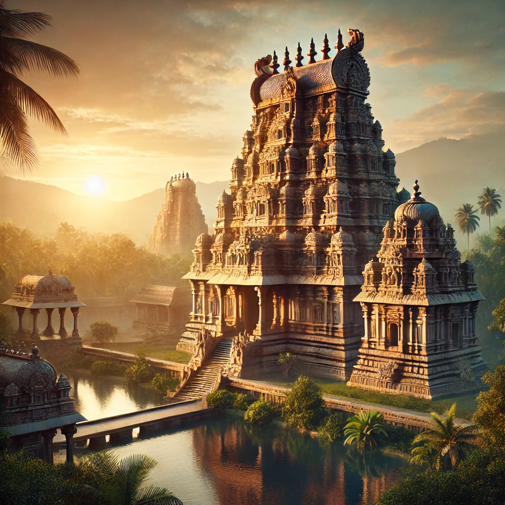
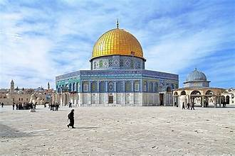
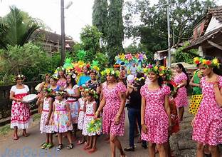
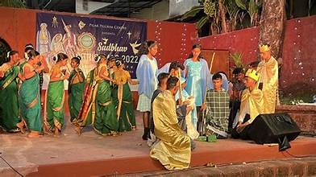

☸️🕉️ Religions of Goa – Harmony in Diversity ✝️☪️
✝️ Christianity – A Heritage of Faith
Christianity ✝️
Introduced by the Portuguese, Christianity has deep roots in Goa.
The region is home to majestic churches, including the Basilica of Bom Jesus.
Catholicism 🙏
The dominant branch of Christianity in Goa.
Known for grand celebrations of Christmas, Easter, and the Feast of St. Francis Xavier.
The dominant branch of Christianity in Goa.
Known for grand celebrations of Christmas, Easter, and the Feast of St. Francis Xavier.
🕉️ Hinduism – Ancient Traditions and Rituals

Hinduism 🕉️
The oldest religion in Goa, with temples honoring deities like Shantadurga and Mangesh.
Rituals, festivals, and traditions continue to thrive.
☪️ Islam – Symbol of Harmony
Islam ☪️
Islam has flourished in Goa, with mosques such as the Jama Masjid and Surla Tar recognized for their historical significance.
Muslims in Goa actively participate in festivals like Eid and Milad-un-Nabi.
🕎 Judaism – A Small but Significant Community

Judaism 🕎
Goa was once home to a small Jewish community with historical ties.
Synagogues and remnants of Jewish heritage can still be found.
Jewish Heritage Sites ✡️
Ancient synagogues and burial sites preserve the history of the Jewish community.
Symbolizes the multicultural history of Goa.
Ancient synagogues and burial sites preserve the history of the Jewish community.
Symbolizes the multicultural history of Goa.

🧘 Buddhism – Legacy of Peace
Buddhism ☸️
Though not widespread, Buddhism finds its presence in Goa through peaceful retreats and meditation centers.
Reflects a growing interest in mindfulness and inner harmony.
🕉️ Jainism – Philosophy of Non-Violence
Jainism 🕉️
Jain temples in Goa symbolize peace, non-violence, and ascetic living.
Though small in number, the Jain community actively preserves its traditions.
🎨 Cultural Harmony – A Tapestry of Faiths

Cultural Harmony 🤝
Goa exemplifies unity in diversity where different faiths coexist peacefully.
Festivals, rituals, and community participation enrich its multicultural identity.
Interfaith Celebrations 🎭
Celebrations where communities come together.
Symbolizes love, brotherhood, and mutual respect.

Celebrations where communities come together.
Symbolizes love, brotherhood, and mutual respect.